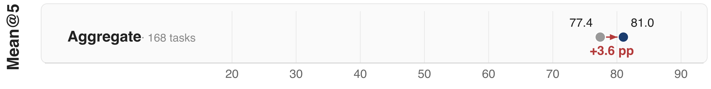

08 Hugging Face 게시일 2026.09.15
IBM Research, 에이전트 반복 성공률 높이는 방법 제시

에이전트는 데모에서 한 번 잘해도 운영 환경에서 같은 일을 다시 시키면 다른 경로로 빠질 수 있다. IBM Research는 이 문제가 평균 정확도 지표에 가려진다고 봤다. 그래서 '평균적으로 잘하느냐'와 '반복해도 계속 잘하느냐'를 따로 측정했다. 그리고 흔들리는 결정을 찾아 안정화하는 방법을 제시했다.
핵심 브리핑
이 연구는 에이전트의 일관성 문제를 다룬다. 같은 작업을 다시 시켰을 때 결과가 바뀌면 실서비스에서 신뢰 문제가 생긴다. 정산 대사나 계약 의무 점검처럼 한 번의 실패가 큰 업무에서는 특히 치명적이다.
IBM Research는 AppWorld에서 GPT-4.1 기반 ReAct 에이전트를 다섯 번씩 반복 실행했다. 평균 성공률인 Mean@5는 77.4%였다. 하지만 다섯 번 모두 성공한 작업 비율인 Pass^5는 53.0%였다. 두 수치의 차이인 일관성 격차는 24.4%포인트였다. 어려운 작업에서는 이 격차가 30%포인트까지 갔다.
연구팀은 이를 줄이기 위해 Consistency Analyzer와 consistency guidelines를 만들었다. 분석기는 한 번 기록된 trajectory만 받아 각 결정 지점을 다시 샘플링한다. 기본값은 k=5다. 전체 작업을 처음부터 다시 돌리지 않고, 각 결정 단계마다 한 번의 추가 호출만 써서 어느 지점이 뒤집히기 쉬운지 찾는다. 모델 내부 로그잇(logits)이나 계측 없이 작동하는 블랙박스 방식이다.
가이드라인을 넣은 뒤 Pass^5는 53.0%에서 69.0%로 올랐다. 같은 작업에서는 16.0%포인트, 비슷한 작업에서는 13.0%포인트 개선됐다. Mean@5도 77.4%에서 81.0%로 올랐다. 연구팀은 평균 정확도를 희생하지 않았다고 밝혔다.

방법과 결과
핵심 방법은 두 단계다. 먼저 분석기가 기존 실행 기록의 각 결정 지점을 재샘플링해 흔들림이 큰 단계를 찾는다. 그다음 그 단계에서 지켜야 할 규칙을 자연어 가이드라인으로 만든다. 예시로는 체크박스 개수 셀 때 단순 문자열 개수 대신 줄 기준 정규식 매칭을 쓰라는 규칙, 검색 결과가 여러 개일 때 올바른 노트를 다시 확인하라는 규칙이 제시됐다.
연구팀은 같은 작업과 유사 작업에 모두 일반화가 된다고 설명했다. 중간 난도 작업에서는 Pass^5가 22.9%포인트, 어려운 작업에서는 14.3%포인트 올랐다. 상대 개선율은 각각 44%, 45%였다. 쉬운 작업도 12.2%포인트 올랐다. 평균 정확도는 난도별로 떨어지지 않았다고 적었다.
이 글은 기술 보고서가 arXiv에 있다고 밝혔지만, 발췌문에는 논문 공개 날짜가 없다. 벤치마크는 AppWorld test_normal 168개 작업이며, 저자 측 평가다. 독립 재현 결과는 아직 제시되지 않았다.
| 지표 | 기존 | 가이드라인 적용 후 | 변화 |
|---|---|---|---|
| Mean@5 | 77.4% | 81.0% | +3.6%포인트 |
| Pass^5 | 53.0% | 69.0% | +16.0%포인트 |
| 일관성 격차 | 24.4%포인트 | 12.0%포인트 | -12.4%포인트 |
| 유사 작업 Pass^5 | - | - | +13.0%포인트 |
업계의 움직임
공개된 발췌에서는 경쟁사 반응이나 고객 도입 사례는 보이지 않는다. 다만 Hugging Face 블로그에 IBM Research 글이 실렸다는 점은 에이전트 평가에서 재현성과 반복 성공을 따로 보려는 문제의식이 커지고 있음을 보여준다.
시사점과 체크포인트
우리 회사가 에이전트를 업무에 붙일 때 평균 성공률만 보면 위험하다. 같은 입력을 다시 넣었을 때 결과가 바뀌는지, 어느 단계에서 흔들리는지를 별도로 봐야 한다. 특히 금융 거래 검증, 계약 조항 확인, 운영 티켓 분류처럼 같은 규칙을 반복 적용하는 업무는 Pass^k 성격의 지표가 더 중요하다.
바로 점검할 항목은 다음과 같다.
- 우리 에이전트 평가에 반복 실행 지표가 있는가
- 한 번 성공한 작업이 다음 날에도 같은 경로로 성공하는가
- 실패 원인이 모델 능력 부족인지, 결정 경계의 흔들림인지 구분하는가
- 실행 기록을 저장해 오프라인 분석에 쓸 수 있는가
- 가이드라인 추가가 규정 준수와 감사 추적성에 어떤 영향을 주는가
이 접근은 모델을 바꾸지 않고 안정성을 높일 수 있다는 장점이 있다. 반면 실행 기록 저장과 재현 실험 체계가 먼저 필요하다. 개인정보와 민감정보가 들어간 작업이라면 로그 보관 범위와 익명화 정책도 함께 설계해야 한다.
주요 용어
원문 정보
제목: Your Agent Aced the Task. Will It Do It Again?
게시일: 2026.09.15
출처 URL: https://huggingface.co/blog/ibm-research/altk-evolve-consistency